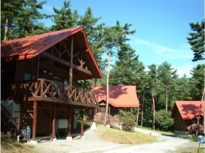
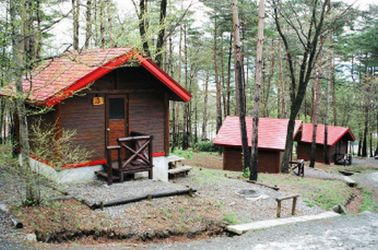
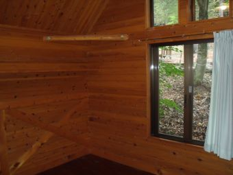
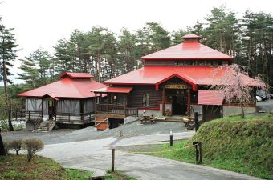
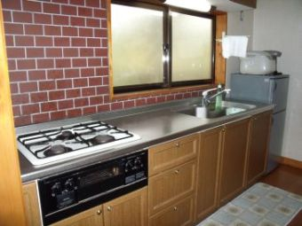

FACILITY GUIDE
施設案内
宿泊棟からスポーツ施設まで、園内の設備をまとめてご紹介します。詳しい料金は「料金・予約」ページをご覧ください。
宿泊施設




交流・体験施設




スポーツ・広場

テニスコート
1時間・1面ご利用いただけます。受付は午前8時30分〜午後4時。

グラウンドゴルフ場
初心者からベテランまで。大会も開催しています（詳しくはイベント情報へ）。

芝生広場・多目的広場
芝生広場は通年無料開放。ボール遊びやピクニックにどうぞ（団体利用は要予約）。

釣り堀
土日祝限定営業（4月〜10月・雨天中止）。竿100円、釣れた魚は1匹500円です。
おうちから園内をのぞいてみよう
各施設名の横にある「ストリートビューで見る」から、現地に行かなくても室内の様子を確認できます。ご予約前の下見にご活用ください。